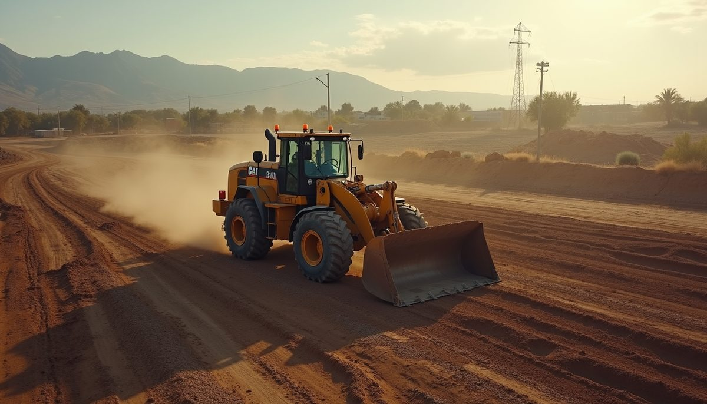

field log —
Expert Site Grading Benefits: Why Hiring Professionals Matters

When preparing land for construction or landscaping, proper site grading is essential. It shapes the land to ensure water flows away from buildings, prevents erosion, and creates a stable foundation. We understand the importance of this step and want to share why hiring expert site grading contractors is a wise choice. Their skills and experience bring many benefits that can save time, money, and stress.
Understanding Expert Site Grading Benefits
Site grading is more than just moving dirt around. It requires precise planning and execution to achieve the desired slope and drainage. Expert site grading contractors bring knowledge of soil types, local regulations, and best practices. This expertise ensures the land is prepared correctly for your specific project.
Some key benefits include:
- Improved Drainage: Proper grading directs water away from structures, reducing the risk of flooding and water damage.
- Erosion Control: Experts use techniques to stabilize soil and prevent erosion, protecting your property and the environment.
- Foundation Stability: A well-graded site provides a solid base for buildings, reducing the chance of settling or shifting.
- Enhanced Aesthetics: Grading can create smooth, attractive contours that improve the overall look of your property.
- Compliance with Regulations: Professionals ensure grading meets local codes and permits, avoiding costly fines or delays.
By trusting experts, we gain peace of mind knowing the job is done right the first time.
How Much Does It Cost to Have Land Graded?
Cost is often a concern when considering site grading. Several factors influence the price, including:
- Size of the Area: Larger sites require more work and equipment.
- Soil Type: Rocky or clay-heavy soil can increase labor and machinery needs.
- Slope and Terrain: Steeper or uneven land demands more precise grading.
- Accessibility: Difficult-to-reach locations may add to transportation and setup costs.
Project Complexity: Additional tasks like erosion control or drainage installation affect pricing.
On average, land grading can range from $1,000 to $5,000 or more. However, investing in expert services often saves money in the long run by preventing drainage problems and structural damage.
We recommend obtaining detailed quotes from reputable contractors and discussing your project goals clearly. This approach helps avoid surprises and ensures you get the best value.

Practical Tips for Choosing the Right Contractor
Selecting the right professional is crucial. Here are some practical tips to guide the process:
- Check Credentials: Verify licenses, insurance, and certifications.
- Review Experience: Look for contractors with a proven track record in your area.
- Ask for References: Speak with past clients to learn about their satisfaction.
- Request Detailed Estimates: Ensure quotes include all aspects of the job.
- Discuss Timeline: Confirm the project schedule fits your needs.
Evaluate Communication: Choose someone who listens and explains clearly.
Taking these steps helps us find a trustworthy partner who understands our vision and delivers quality results.
Environmental and Long-Term Advantages
Expert site grading also supports environmental sustainability. Properly managed land reduces runoff pollution and protects nearby waterways. Contractors often incorporate eco-friendly practices such as:
- Using native plants for erosion control
- Designing natural drainage systems
Minimizing soil disturbance
These methods not only benefit the environment but also enhance property value and durability. Over time, well-graded land requires less maintenance and repair, saving effort and resources.
Why We Recommend Professional Site Grading Services
In our experience, professional site grading services offer unmatched benefits. They combine technical skill with local knowledge to create safe, functional, and beautiful outdoor spaces. Whether for a new home, commercial building, or landscaping project, expert grading lays the foundation for success.
If you are considering land preparation, we encourage you to connect with site grading contractors who specialize in your region. Their personalized approach and commitment to quality will help bring your project to life smoothly and confidently.
We appreciate your interest in learning about expert site grading benefits. Taking this step thoughtfully ensures your property remains protected and attractive for years to come.
Reproduced from Environmental Construction Services' public blog (environmentalconstructions.com). Part of this private website concept.